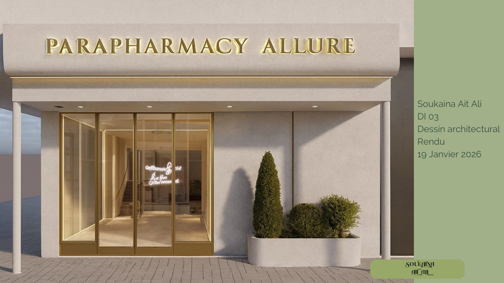

Projets
Un projet de fin d'études et deux concepts développés en autonomie. Chacun est documenté de la intention initiale jusqu'aux perspectives : plans, coupes, ambiances et matières.
-
Centre de réhabilitation
Addictions comportementales · Jardin central · Chambres, cafétéria, art-thérapie, yoga, psychothérapie.

-
REBORN — Concept store
Mobilier éco-responsable · Réparation & personnalisation · Identité visuelle complète, plans et perspectives.

-
Parapharmacie Allure & Spa
Retail + wellness sur trois niveaux · Sous-sol, rez-de-chaussée, mezzanine · Travertin, terrazzo, bois courbé.

Note de lecture
Le projet 01 est un travail académique (Collège LaSalle) ; les projets 02 et 03 sont des concepts personnels. Aucun de ces espaces n'a été construit — les visuels montrent les documents d'étude originaux : relevés, plans AutoCAD, planches d'ambiance et rendus 3D (SketchUp / 3ds Max, V-Ray).